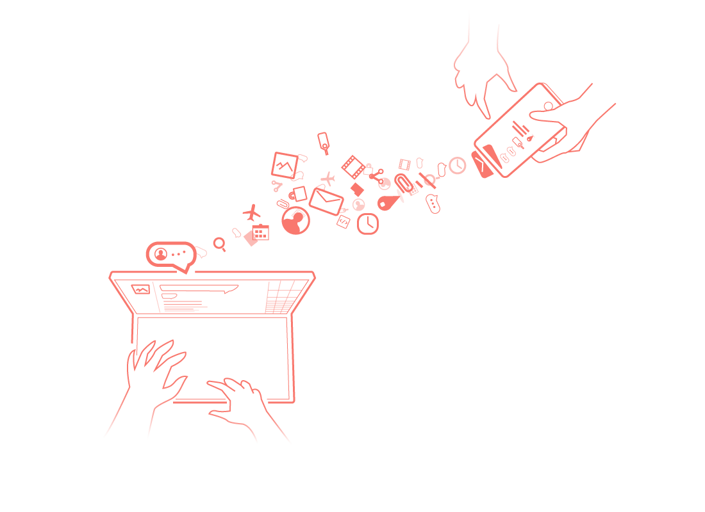
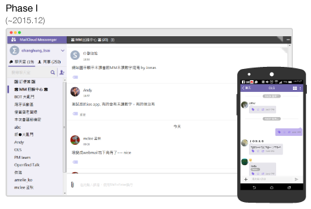
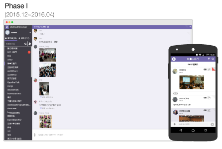
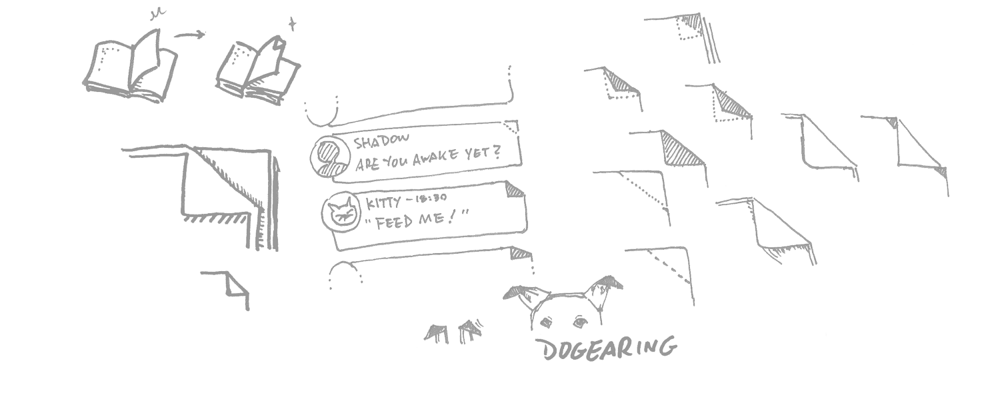
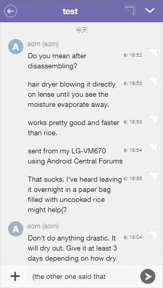
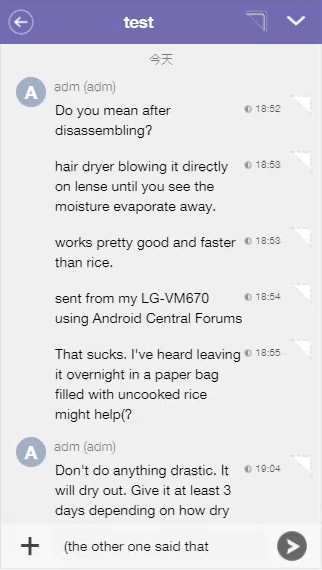

“ A work HUB, and A team messaging platform. (called MM) ”
2014.07~2015.02
I have omitted confidential information in this case study.
{kind=link}
my role
- Research. Observed the behaviours from internal users and collected the feedback after updated.
- Design & Execution. Sketches, Wireframe, High-fidelity prototype and Code adjustment deliverables.
- Validation. I used a plenty of ways to make sure our design would meet the user needs, such as Eye-tracking, usability testing by flipping the prototype by user.
- A member of Scrum as well. In MM team, we run scrum to fulfill the changeable user needs.
How we get there?
Email would not be replace (at least right now), but the type of communication could become much more various. Since Mail2000 has been known as a reliable enterprise Email system in Taiwan (called Cybermail in Japan) over the past 10 years, why don't we try to create a united message platform and deliver more simple and lighter communication features to our customers?
" Why don't we build an intergrated messege plafform? "
GOAL
Can we replace Sk**pe with MM ?
Would our colleagues be willing to use MM to communicate?
If ours colleagues need instant message indeed, then it's important to let them willing to replace Sk**pe with MM use it. We would prefer not to change users' workflow; in addtion, they can start on a new conversation very quickly.
Our primary goals in early stage were:
- Fast & easy to use ;
- everything is easy to access ;
- we can communicate on one platform !
PROCESS
Phase I: Speed! Speed! Speed!
Firstly, we quickly built and released a primary chat feature when we made sure the basic need instead of carrying on the user research, because we decided let it BE USED as soon as possible. Just as planned, our colleagues responded lots of feedback (subjective opinions, behaviours) when they were aroused, and based on these prioritised feedback, we started countless iterations including implementation and validation.


Fig. 1 the MM UI in the period of Beta Version
Phase II: Agile. Countless quick and short iterations.
When our colleagues identified MM as a enterprise tool when chatting, they gave us deeper information when we inquired them because of more diverse scenarios and their reflection. In this phase, we tried to let them feel "WOW! MM is alive!" by fortnightly releasing features that they desired.
The process was like:
- Prioritize all the opinions which each member have already understand stories.
- Consider man-day and assign story point together.
- Start a new sprint.
- Release and retros.
{kind=link}
Besides, we tried to learn and review some popular tools which could help us manage the projects in order to strengthen our domain-knowledge regarding to WORK and TASK.
From 2016.04, the main visual of MM is as below,
{kind=link}
FEATURE
Based on our early insights, we found that the most upsetting flaw of SK**E was "hard to find messages." Besides, lots of users have already been familiar with the mental model of how to chat: Quickly start to chat without send him an invitation as long as you find the colleague in your contact.
Our beta version focused on deliverying a service that is simple and easily to access your messages you want.
Fast and easy to use- Quickly start chatting as long as you find the colleagues.
- New member still could view past messages. (and managed by admin)

We often folded down the corner of a book page, which is called DOGEAR. I connect the filter feature with this intuitive behaviour so that user can easily fold down any message what they want to tag, and, by one click, all the folded message will be display at once.
 Fig. 2 Concept and Sketch of DOGEAR{kind=link}
In the desktop version (web and application), I tried to design a visual metaphor interaction that user is just like to fold a message at the corner by mouse; In the mobile, user can easily access the important messages just by one touch.


Fig. 4 DOGEAR in MOBILE and the real interaction
Seamless communication
Not only the user which is in the internal domain can be communicated, we designed a feature that connects both internal and external communication by mail, and of course, it is audited by Admin.
{kind=link}
On the other hand, we strongly intergrated the Mail2000 mail server, the context of work becomes much more smoothly because of the effeciency: easily to start a chat.
{kind=link}
Validation
We aimed at delivering features what meet users need properly, each feature we created always went through several iteration.
Ensure user's need by card game(?Quickly user testing before implement. As you can see in fig.7, before coding, one of the paper prototype (screenshot) that I visualized rapidely by sketch, and I recruited some colleagues, let them try to interacte with it. I usually use this kind of testing to check the navigation structure of concept that I created because it's simple, besides, it is fun ♪
How does it carry out?
Fig. 7 Flow testing{kind=link}
- Set up the screenshots by flow and face them down on the table (except the first step).
- Let a participant look the current step and think-aloud.
- Before the participant flips over the next step, he or she needs to express his or her anticipation.
- Mark the key step which makes them feel surprise or shock.
- Interview the participant after he or she completes the task.
The result would be very clear when a participant filps over the card and we could easily observe his or her reaction.
Based on the FACTMM dashboard shows tons of records we want to detect. In the Fig.8 below, there are some general data such as login log and the count of message by predefined rules. We also check and find the changes when after a new feature released.
{kind=link}
Additional insight provided from eyetracking
In order to make sure MM UI always provides that certain information in a quickly and easily accessible manner, we also conducted usability testing with eyetracking to gain an understanding about how users complete a task and how difficult or easy it is to complete.
{kind=link}
{kind=link}
The following case study is an exploration when we validated the Poll feature. There are two primary goals:
- Detect usability problems.
- Realize what kind of UI layout should we concern when designing more features in the future.
I recruited 5 participants and invited them to complete a task: Create a Poll and vote it (as you can see in Fig. 9.) The results indicated that:
- All of 5 participants complete the task smoothly. Besides, from the TFF (Time to First Fixation) shown in Fig.11, participants found the Key Button: the entry of creating a Poll quite quickly.
- When performing the task we gave, participants were attracted by the left dark background naturally in the screen even there wasn't any visual elements relating to the whole task, actually.
{kind=link}
{kind=link}